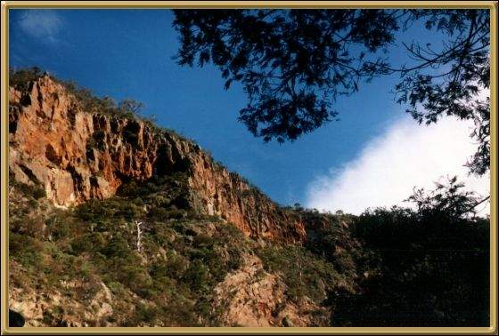

This is actually the wall of the gorge. Werribee Gorge itself is a favourite for bushwalkers here, as it is mainly undeveloped land, and therefore wild, natural bushland, and it is within an hours drive of Melbourne.
Photographer: Jean Stokes